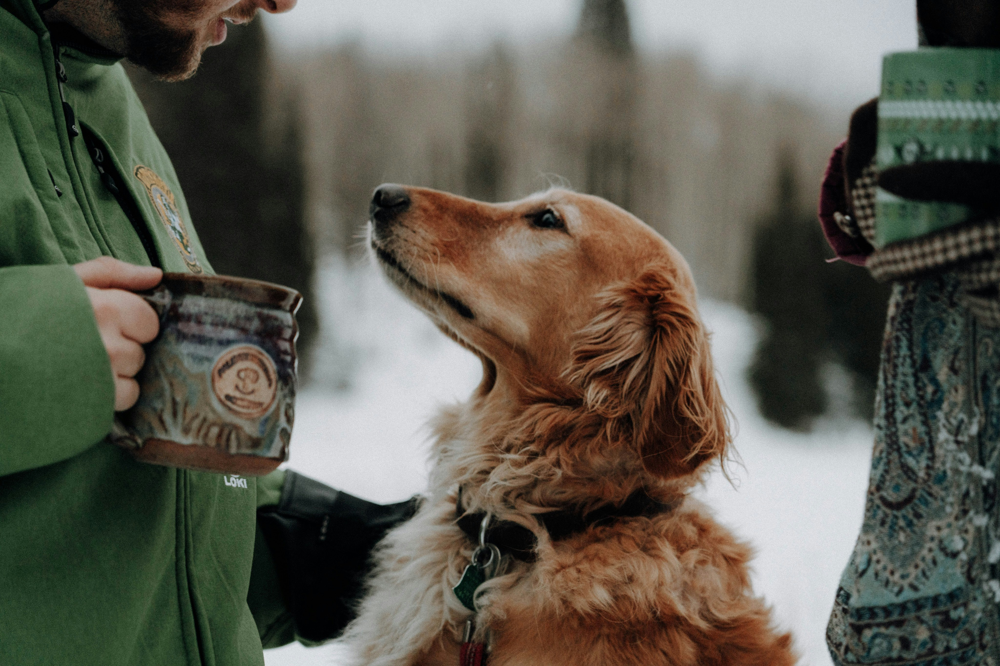

This breed likes to be active. Remember, golden retrievers are bird dogs at heart, so they love a good game of fetch or a swim. If exercise is provided daily, retrievers can adapt to any type of home, even if it is a city apartment.
Golden Retriever
Dogs are not our whole life, but they make our lives whole.-Roger Caras
Expectations for Golden Retriever

What is a Golden Retriever?
The Golden Retriever, an exuberant Scottish gundog of great beauty, stands among America's most popular dog breeds. They are serious workers at hunting and field work, as guides for the blind, and in search-and-rescue, enjoy obedience and other competitive events, and have an endearing love of life when not at work. The Golden Retriever is a sturdy, muscular dog of medium size, famous for the dense, lustrous coat of gold that gives the breed its name. The broad head, with its friendly and intelligent eyes, short ears, and straight muzzle, is a breed hallmark.
In motion, Goldens move with a smooth, powerful gait, and the feathery tail is carried, as breed fanciers say, with a 'merry action.' The most complete records of the development of the Golden Retriever are included in the record books that were kept from 1835 until about 1890 by the gamekeepers at the Guisachan (pronounced Gooeesicun) estate of Lord Tweedmouth at Inverness-Shire, Scotland. These records were released to public notice in Country Life in 1952, when Lord Tweedmouth's great-nephew, the sixth Earl of Ilchester, historian and sportsman, published material that had been left by his ancestor. They provided factual confirmation to the stories that had been handed down through generations. Goldens are outgoing, trustworthy, and eager-to-please family dogs, and relatively easy to train. They take a joyous and playful approach to life and maintain this puppyish behavior into adulthood. These energetic, powerful gundogs enjoy outdoor play. For a breed built to retrieve waterfowl for hours on end, swimming and fetching are natural pastimes.
Golden Retriever Personality
The golden retriever is even-tempered, intelligent and affectionate. Golden retrievers are playful, yet gentle with children, and they tend to get along well with other pets and strangers. These dogs are eager to please, which probably explains why they respond so well to obedience training and are such popular service dogs. They also like to work, whether it involves hunting birds or fetching their guardian's slippers.
Golden retrievers are not often barkers, and they lack guard instincts, so do not count on them to make good watchdogs. However, some golden retrievers will let you know when strangers are approaching.